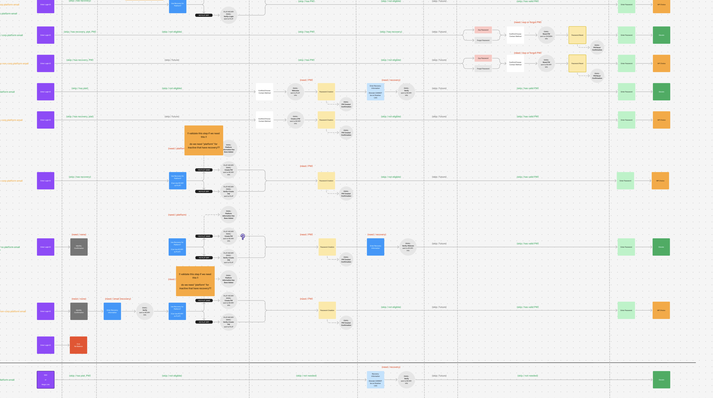
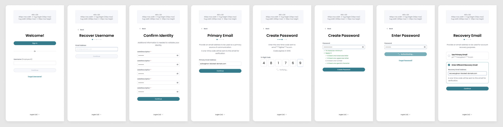

The initial task was to add a path in the existing system that would allow former single-sign on (SSO) employees access to their accounts. These SSO users were never required to create a password, so a method to identify them without authentication from our initial screen did not exist.
solution
While solving for our original challenge, we ended up creating a single path that guides any and all users through successive checkpoints, beginning with one piece of identification, and pausing only when information is needed to continue.
The Door for Our Users
This temple in Tamil Nadu, India looks like a beutiful dreamworld I'd like to visit one day.
Kadhavu, meaning door in Tamil, is the name of the sign on, or session initialization, process on our platform. Since we have a team in Tamil Nadu, India that created our first release, Kadhavu is the name we use to represent this entry point to our product.
Because we have several different sign in methods, company configurations, and user situations, Kadhavu manages password bypass options, access to multiple Marketplaces, and all onboarding considerations (username recovery, password expiration, recovery email, contact preferences, etc.).
Assessing the Existing System
As I dug into at the existing experience and began thinking about solutions, the system seemed to be a patchwork of flows, pieced together without consideration of the overall process or user’s experience.
Preliminary ideas felt like they were adding complication and user confusion:
Add a “former employee” link? The tone felt exclusive and out of place, especially if a current employee entered accidentally…
Create an off-shoot experience? This added tech debt to be maintained separately from everything else…
Use person attributes? How, in the existing system?…
Get the wrenches out.
Gaining Perspective, Pivoting…
Bouncing these ideas off of our Product Architect, we quickly questioned if any addition was worth the effort—not only from an experience perspective, but from a development perspective as well.
With a rough whiteboard of what we knew about the system, we quickly shifted the focus away from solving for a small group of users, to understanding the broader system for all users.
Adding a solution into the existing system would create another problem for us.
A Big Idea with Small Steps
While now representing both user experience and underlying development, we reimagined a simple and streamlined system. 💡 Our concept strung together bite-sized user tasks into a sequence of isolated events, each informing the next. Any user could enter and we would be able to systematically guide them on an individualized path.
Sharing the idea with stakeholders and product owners earned us the green light we needed to continue.
Users will not go through all of these steps, but will if they need to.
Forward Together with Leaps and Bounds
With our new structure outlined, we zoomed in on each user step and volleyed for weeks to define development needs and inform design requirements. Together, we:
Collaborated in deep discussions connecting intricate technical situations with clear, easy-to-follow user experience steps.
Worked through hundreds of micro-iterations in tandem, looking at each situation from any and all angles.
Organized each step in order for users based on chronology, logic, and security.

Keeping this Figjam file up-to-date was imparative and moved this project into UI design.
As each step became crystal clear, interface design came easy. A consistent layout was created to present each step.

These interfaces will guide a user through each step.
The Hallway for All Users
Positive User Impact
Reduced Cognitive Load: by removing all unnecessary interface options on the Welcome screen
Individual, Guided Experience: by starting with a single piece of user information, we are able to guide the user efficiently, for their situation
Faster, Industry-standard Security: by employing one-time passwords, we provide a modern, familiar method of verification that allows users to stay on the same browser page
Small Changes, Big Results
Moved highly-used SSO button up to top
Added focus states to reduce clicks and accelerate the process
Added progress states and animation between steps to show a sense of progress
Eliminated countless error states
Sped up transitions to routing destinations by simplifying the code to endpoints
Future Releases
The first release of this work was scaled down in order to be manageable, addressing only the steps necessary for current users. Soon, we will be coming back to develop and activate more checkpoints along our path to offer more access to more users, as well as other onboarding considerations like preferences and recovery information.
Final Thoughts
Collborating and working along-side our Product Architect on this highly-imaginitive and detailed structure was one of the most fun and rewarding projects I've ever taken part in. By working together—rather than one team informing the other—we were able to learn from eachother and create something bigger and better than either of us could alone. 😀